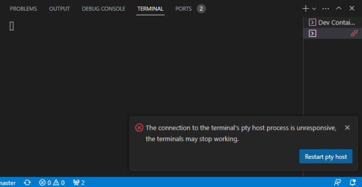
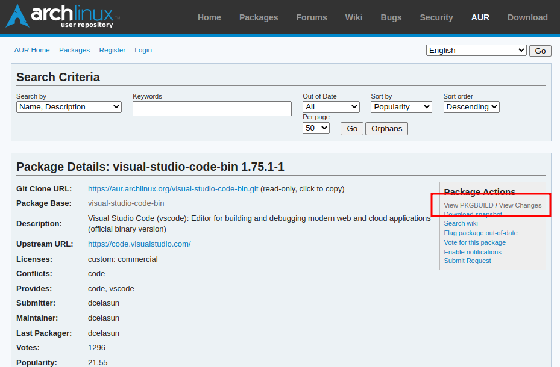
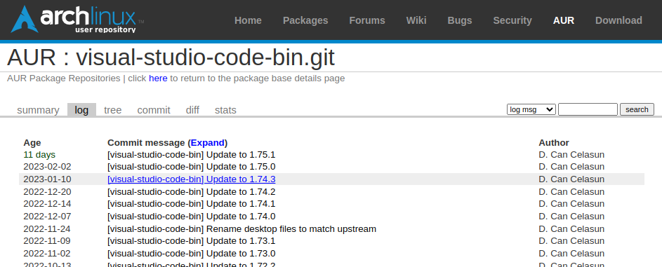
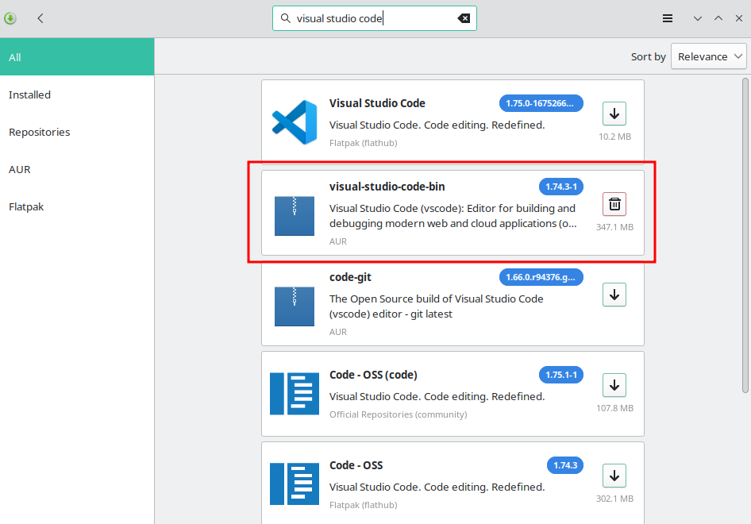

# 錯誤訊息
Visual Studio Code 1.76.1 版本已不會有此問題
更新 Visual Studio Code 後，進入 Dev Containers 出現錯誤 The connection to the terminal's pty host process is unresponsive ，且 terminal 無法使用。

點選 Restart pty host 後 terminal 仍無法正常顯示
# 環境
- 作業系統
$ lsb_release -a | |
LSB Version: n/a | |
Distributor ID: ManjaroLinux | |
Description: Manjaro Linux | |
Release: 22.0.4 | |
Codename: Sikaris |
- Visual Studio Code 1.75.1 (會出現錯誤的版本)
# 嘗試修正
Visual Studio Code 設定 terminal.integrated.windowsEnableConpty: false，重啟後異常狀況一樣。
# 使用 downgrade 降版
無法降版，可能因為我先把 VSCode 刪除再重新安裝，而重新安裝是最新版的，所以電腦內沒有保留舊版本。
$ sudo downgrade visual-studio-code-bin | |
Downgrading from A.L.A. is disabled on the stable branch. To override this behavior, set DOWNGRADE_FROM_ALA to 1. | |
See https://wiki.manjaro.org/index.php/Downgrading_packages for more details. | |
No results found | |
Unable to downgrade visual-studio-code-bin |
# 直接安裝舊版本
# 取得舊版本
從 AUR repository 找到使用的套件 visual-studio-code-bin，點選 View Changes 查看舊版本。

選擇可以正常的版本；1.74.3，下載套件。


# 建立 package
解壓縮後進入
$ ls -a1 | |
. | |
.. | |
code.desktop | |
code-url-handler.desktop | |
PKGBUILD | |
.SRCINFO | |
visual-studio-code-bin.install | |
visual-studio-code-bin.sh | |
visual-studio-code-workspace.xml |
建立 package
$ makepkg -s | |
==> Making package: visual-studio-code-bin 1.74.3-1 (廿廿三年二月廿日 (週一) 廿時47分十三秒) | |
==> Checking runtime dependencies... | |
==> Checking buildtime dependencies... | |
==> Retrieving sources... | |
-> Found code.desktop | |
-> Found code-url-handler.desktop | |
-> Found visual-studio-code-workspace.xml | |
-> Found visual-studio-code-bin.sh | |
-> Downloading code_x64_1.74.3.tar.gz... | |
% Total % Received % Xferd Average Speed Time Time Time Current | |
Dload Upload Total Spent Left Speed | |
100 134 100 134 0 0 159 0 --:--:-- --:--:-- --:--:-- 159 | |
100 131M 100 131M 0 0 3979k 0 0:00:33 0:00:33 --:--:-- 4091k | |
==> Validating source files with sha256sums... | |
code.desktop ... Passed | |
code-url-handler.desktop ... Passed | |
visual-studio-code-workspace.xml ... Passed | |
visual-studio-code-bin.sh ... Passed | |
==> Validating source_x86_64 files with sha256sums... | |
code_x64_1.74.3.tar.gz ... Passed | |
==> Extracting sources... | |
-> Extracting code_x64_1.74.3.tar.gz with bsdtar | |
==> Entering fakeroot environment... | |
==> Starting package()... | |
==> Tidying install... | |
-> Removing libtool files... | |
-> Purging unwanted files... | |
-> Removing static library files... | |
-> Stripping unneeded symbols from binaries and libraries... | |
-> Compressing man and info pages... | |
==> Checking for packaging issues... | |
==> Creating package "visual-studio-code-bin"... | |
-> Generating .PKGINFO file... | |
-> Generating .BUILDINFO file... | |
-> Adding install file... | |
-> Generating .MTREE file... | |
-> Compressing package... | |
==> Leaving fakeroot environment. | |
==> Finished making: visual-studio-code-bin 1.74.3-1 (廿廿三年二月廿日 (週一) 廿時48分二秒) |
建立 package 後會產生需要的檔案，檢查有沒有產生 visual-studio-code-bin-1.74.3-1-x86_64.pkg.tar.zst 。
$ ls -a1 | |
. | |
.. | |
code.desktop | |
code-url-handler.desktop | |
code_x64_1.74.3.tar.gz | |
pkg | |
PKGBUILD | |
src | |
.SRCINFO | |
visual-studio-code-bin-1.74.3-1-x86_64.pkg.tar.zst | |
visual-studio-code-bin.install | |
visual-studio-code-bin.sh | |
visual-studio-code-workspace.xml |
# 安裝
$ sudo pacman -U visual-studio-code-bin-1.74.3-1-x86_64.pkg.tar.zst | |
loading packages... | |
resolving dependencies... | |
looking for conflicting packages... | |
Packages (1) visual-studio-code-bin-1.74.3-1 | |
Total Installed Size: 331.05 MiB | |
:: Proceed with installation? [Y/n] y | |
(1/1) checking keys in keyring [####################################] 100% | |
(1/1) checking package integrity [####################################] 100% | |
(1/1) loading package files [####################################] 100% | |
(1/1) checking for file conflicts [####################################] 100% | |
(1/1) checking available disk space [####################################] 100% | |
:: Processing package changes... | |
(1/1) installing visual-studio-code-bin [####################################] 100% | |
==> NOTE: Custom flags should be put directly in: ~/.config/code-flags.conf | |
Optional dependencies for visual-studio-code-bin | |
glib2: Needed for move to trash functionality [installed] | |
libdbusmenu-glib: Needed for KDE global menu [installed] | |
org.freedesktop.secrets: Needed for settings sync [installed] | |
icu69: Needed for live share | |
:: Running post-transaction hooks... | |
(1/4) Arming ConditionNeedsUpdate... | |
(2/4) Updating the MIME type database... | |
(3/4) Refreshing PackageKit... | |
(4/4) Updating the desktop file MIME type cache... |
# 注意事項
在 Linux 環境要安裝 visual-studio-code-bin 的版本，才有 Remote Development 套件可以安裝。
